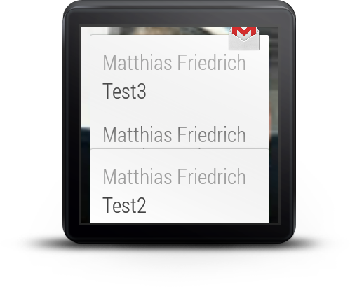
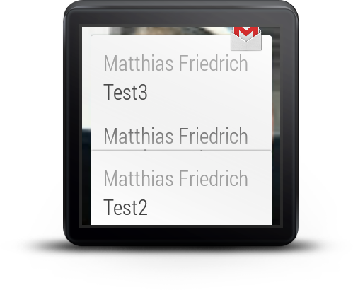
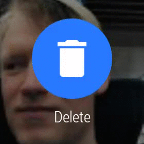
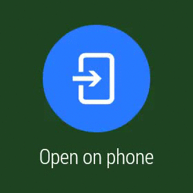
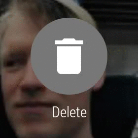
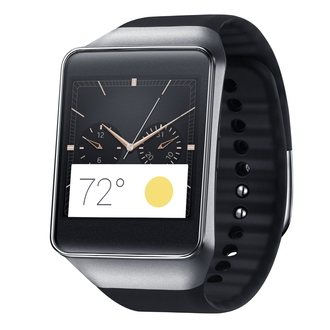
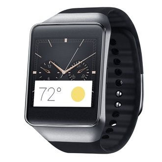

- Matthias Friedrich
- Android Developer @ Jimdo
- Java Developer
- Cofounder/-organizer
GDG Bremen/GDG Hamburg Android - @peacei
- google.com/+MatthiasFriedrich
The Jimdo Mobile team at lunch...
Use technologie but get it out of the way!
Android Wear


The Context Stream
- list of cards
- navigation vertically
- interaction horizontally
- contextual, glancable information (-> Google Now)
- Notifications (-> from apps running on your phone)

The Cue Card ("Launcher")
- activation by "OK Google"
or tapping the watchface - Voice Actions
- shows list of suggested Actions
- f.e. "Take a note"
- each Action triggers an Intent
- apps can react to Intents just as usual
using IntentFilters
- Explicit Intents, f.e. "OK Google Start AppXY"
- Implicit Intents, f.e. "OK Google Take a Note"

Android Wear
- basically the same OS, same Apis, same tools
- Android 4.4W.2
- SDK lvl 20
missing packages/Apis:
- android.webkit
- android.print
- android.app.backup
- android.appwidget
- android.hardware.usb
but it still has:
- android.location
- android.net.wifi
- android.hardware.SensorManager
- android.hardware.Camera
Android Wear Companion App
- at least Android 4.3
- at least Google Play Services 5.0 (Wearable Services)
- reads notifications and pushes them
to the wearable device - syncs wearable apps to the watch
- define default apps for intents/voice actions
- other watch settings
Notifications
Notifications (just as usual)
// create notification using a builder
NotificationCompat.Builder notificationBuilder =
new NotificationCompat.Builder(this)
.setContentTitle("Title")
.setContentText("Short message")
.setContextIntent(pendingIntent) ...;
// add a action to show on Phone and Wearable
notificationBuilder =
.addAction(iconRes, "ActionTitle", pendingIntentAction1);
// show the notification
notificationManager.notify(notificationId, notificationBuilder.build());
... with adjustments for Wearables
// create the Wearable action
NotificationCompat.Action wearableAction =
new NotificationCompat.Action.Builder(iconRes,
"WearableActionTitle", pendingIntentAction2))
.build();
// wrap the Action in a WearableExtender
.extend(new WearableExtender().addAction(wearableAction))
// show the notification just on the Phone
notificationBuilder.setLocalOnly(true);
Notification - Pages
// Create second page notification
Notification secondPageNotification =
new NotificationCompat.Builder(this)
.setContentText("2nd Page Text")... .build();
// Wrap second page in WearableExtender and extend
// the main notification
Notification twoPagesNotification =
new WearableExtender()
.addPage(secondPageNotification)
.extend(notificationBuilder)
.build();
notificationManager.notify(notificationId, twoPagesNotification);


Notification - Stacks
 

Notification - Actions with VoiceInput
// Create intent for reply action
Intent replyIntent = new Intent(this, ReplyActivity.class);
PendingIntent replyPendingIntent =
PendingIntent.getActivity(this, 0, replyIntent, 0);
// Key for the string that's delivered in the action's intent
private static final String EXTRA_VOICE_REPLY = "extra_voice_reply";
String replyLabel = getResources().getString(R.string.reply_label);
String[] replyChoices = getResources().
getStringArray(R.array.reply_choices);
RemoteInput remoteInput = new RemoteInput.Builder(EXTRA_VOICE_REPLY)
.setLabel(replyLabel).setChoices(replyChoices)
.build();


Notification - Actions with VoiceInput
// Create the reply action and add the remote input
NotificationCompat.Action action =
new NotificationCompat.Action.Builder(R.drawable.ic_reply_icon,
getString(R.string.label, replyPendingIntent))
.addRemoteInput(remoteInput)
.build();
// Build the notification and add the action via WearableExtender
Notification notification =
new NotificationCompat.Builder(mContext)
...
.extend(new WearableExtender().addAction(action))
.build();

- com.android.support:support-v4:20.+
- - WearableExtender
- - NotificationCompat
Connection and Synchronisation
- Node API
- tells you when devices get
connected/disconnected
- tells you when devices get
- Messages API
- "Fire-&-Forget" commands
- deliver Intents or MediaPlayer commands
- Data API
- automatic data sync between devices
- send binary blobs of data (f.e. images)
- automatic caching to avoid repeated
transfers over bluetooth
- com.google.android.gms:play-services:+ (5.0 and above)
- provides Wearable Service APIs to sync data between the Phone and the Wearable
- separately available as: com.google.android.gms:play-services-wearable:+
Wearable UI
android.support.wearable.view
BoxInsetLayout
android.support.wearable.view
WearableListView
android.support.wearable.view
DelayedConfirmationView

android.support.wearable.activity
ConfirmationActivity



android.support.wearable.view
CardFragment
android.support.wearable.view
GridViewPager & FragmentGridPagerAdapter
- WearableListView
- CircledImageView
- DelayedConfirmationView
- DismissOverlayView
- WatchViewStub
- com.google.android.support:wearable:+ (unofficial)
d.android.com/wear
Devices
 


Lollipop Wear ?
Rumor mill: December 2014
known so far:
- new Watchfaces
- official Watchface API
- ui improvements
- way more watch settings
R: "OK Google Start Camera"

Wear Camera Remote: "OK Google Start Camera"
Google Keep: "OK Google Take a Note"


Google Music


<Thanx!>